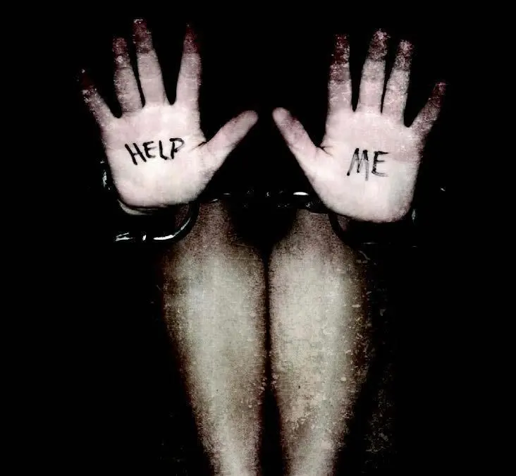

Stop alla violenza sulle donne

La violenza sulle donne è l'atto più codardo che un essere umano possa compiere.
Oggi nella giornata mondiale della violenza sulle donne, anche se è giunta quasi alla fine, voglio prestare attenzione alle tante donne che in questo periodo di covid e lockdown, sono costrette a restare più tempo in balia dei loro carnefici.
Perché non dev'essere ricordato solo per una giornata ma dev'essere detto costantemente, cosicché entri nella mente delle vittime di trovare il coraggio di denunciare e, soprattutto, nella testa dei carnefici che certi atti non ti rendono uomo.

Basti pensare che solo nei 3 mesi di totale lockdown ci sono state 56 vittime, pari ad una media di 1 ogni 2 giorni.
Ancora oggi il femminicidio è una piaga del nostro paese.
Donne fragili, sensibili, comprensive, deboli che non hanno il coraggio di denunciare.
Ma la cosa più importante su cui dobbiamo riflettere è che tantissime volte invece, ci sono state anche donne che hanno provato a denunciare ma con esiti negativi.
Questo perché la legge non prevede una tutela per maltrattamenti sin dai primi segnali.
O meglio, dopo la denuncia partono le indagini che finisce poi con un processo penale, tutto questo non in tempi brevi e senza allontanare il carnefice; dunque inizialmente non è considerata 'violenza sulle donne' o violenza di genere.
Ragion per cui, molte volte le donne hanno paura di denunciare, sì, perché c'è il timore di dover restare sotto lo stesso tetto anche dopo la denuncia e subire abusi o addirittura, essere ammazzate nell'attesa di una sentenza.
Purtroppo ad oggi l'allontanamento immediato è possibile ottenerlo solo in caso di:
uno schiaffo particolarmente forte, una spinta che provochi un urto o, comunque, qualsiasi conseguenza che sia anatomicamente valutabile in ospedale come lesione.
Insomma, un gesto per la quale sia possibile dare una prognosi anche solo di pochi giorni: potrà legittimare il familiare leso a denunciare il fatto e a chiedere protezione dalla violenza domestica mediante l’allontanamento dalla casa familiare.
Dunque, solo con violenze fisiche, le violenze psicologiche invece, non rientrano ancora in una richiesta di allontanamento.
Centri antiviolenza
In questi casi però, dobbiamo dare atto ai centri antiviolenza.
Si attivano ormai da oltre trent'anni per la tutela delle donne vittime di violenza psicologica e fisica.
Le sostengono e danno loro la forza necessaria per combattere il femminicidio.
Il più delle volte aiutandole a capire che non è normale l'atteggiamento dei propri partner.
Speriamo più che mai, che tutte queste donne ferite, bruciate, ammazzate, uccide dentro e umiliate, prima o poi riceveranno giustizia.
Continueremo sempre ad invitare a denunciare o almeno, lasciarsi aiutare anche tramite chat per uscire fuori e cambiare vita.
Voi potete cambiare vita, lo meritate.